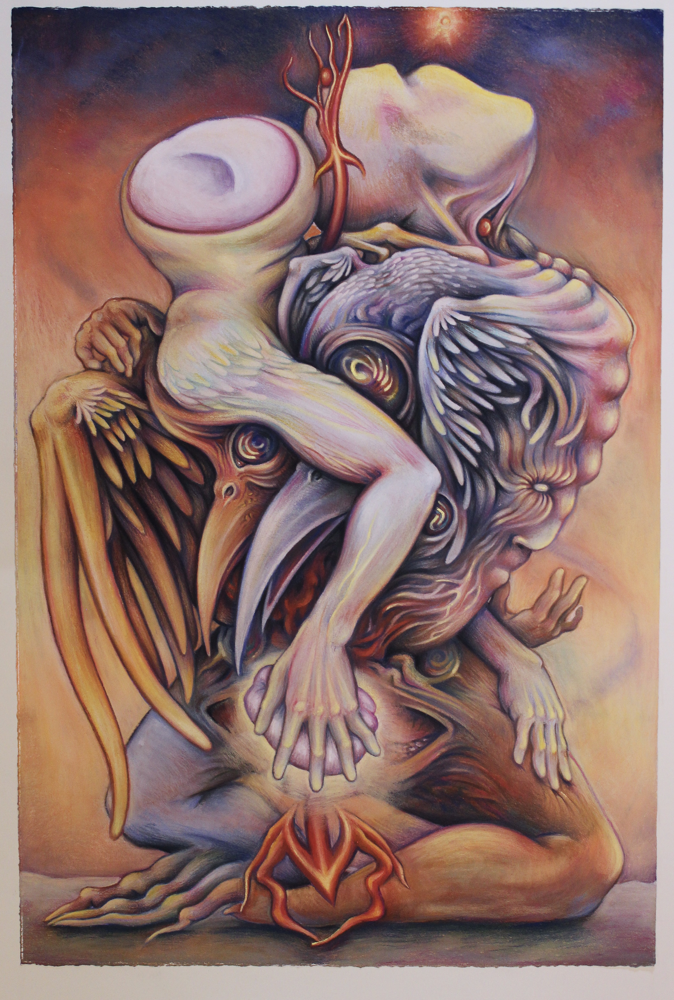

Tired Union (Red Giant), Soft pastel on paper, 30"x35," 2024
Tired Union (Red Giant), Soft pastel on paper, 30"x35," 2024
 A Tired Union's Child Finds a Bead of Cause (White Dwarf), Soft pastel on paper, 30"x23," 2024
A Tired Union's Child Finds a Bead of Cause (White Dwarf), Soft pastel on paper, 30"x23," 2024

It Cries Out in Song, Soft pastel on paper, 30"x40," 2024
It Does Not Find What It is Looking For, Soft pastel on paper, 30"x40," 2024
 It Searches for Its Life's Lost Child, Soft pastel on paper, 30"x40," 2024
It Searches for Its Life's Lost Child, Soft pastel on paper, 30"x40," 2024
 It is Born as It Dies, Soft pastel on paper, 30"x40," 2024
It is Born as It Dies, Soft pastel on paper, 30"x40," 2024
Hissing Infant, Soft pastel on paper, 22"x30," 2024